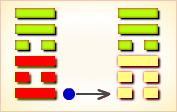
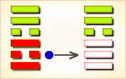
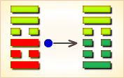
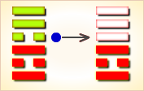
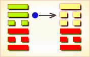
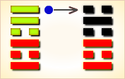

周易第37卦_家人卦(风火家人)_巽上离下
如有疑问互相交流，微信：470283584
周易第37卦详解
家人卦原文
家人。利女贞。
象曰：风自火出，家人。君子以言有物，而行有恒。
白话文解释
家人卦：卜问妇女之事吉利。
《象辞》说：本卦外卦为巽，巽为风；内卦为离，离为火，内火外风，风助火势，火助风威，相辅相成，是家人的卦象。君子观此卦象，从而省悟到言辞须有内容才不致于空洞，德行须持之以恒才能充沛。
《断易天机》解
家人卦巽上离下，为巽宫二世卦。家人卦为家庭和睦、和合之象，多主吉。
北宋易学家邵雍解
人心内向，家道兴隆；严正有恒，不能移心。
得此卦者，与人合作共事者会有利，且多有喜事之象，家庭和睦者，能同心协力，发展事业。
台湾国学大儒傅佩荣解
时运：旺运当头，言行小心。
财运：囤积货品，后有高价。
家宅：小心火灾；亲上加亲。
身体：痰多气喘，难以根治。
传统解卦
这个卦是异卦（下离上巽）相叠。离为火；巽为风。火使热气上升，成为风。一切事物皆应以内在为本，然后伸延到外。发生于内，形成于外。喻先治家而后治天下，家道正，天下安乐。
大象：风吹火之象，助火之威，喻家人同心协力，发展事业。
运势：平安大吉，与人合作则易成，更有喜庆之象，如添丁婚嫁等。
事业：成功与否取决于家庭的情况。严格治家，防止“后院”起火出现意外事故，这是事业成功的先决条件。夫妇和睦，共同合作，必可脱贫致富。事业应由内而外，循序渐进，持之以恒，而后必有所成。
经商：以治家方式用于商业活动。对待公司员工应严宽结合，以严为主。宜集中领导，主事一人，共同合作，日积月累。
求名：以勤苦努力和安贫乐道为主，更应有家庭的支持。家道兴盛的同时，个人的事业也就容易成功。
婚恋：和睦的家庭，是一切的基础，而妻子又是家道的根本。择妻应慎重，和乐兴家。
决策：因好的家庭和妻子的支持而顺利成功，务必保持这种优势，否则，由盛转衰在顷刻之间。尤其应预防家庭变故。持家重在谦和待人，勤俭积蓄以致富。亲人相互和睦、友好。
台湾张铭仁解卦
家人：表示同为一家人，主小吉之象。事事以家人为重之意，如事业投资均需一家人合作共事为佳。感情，为成家之吉象。
解释：家人离散，吉中带凶。
特性：为人热忱，待人谦恭有礼貌，善交际，外表积极内心保守。喜家庭生活，爱小孩小动物。
运势：平安无事，且有喜事之象，与家人共事者大利。
家运：万事畅达如意，和乐之象。
疾病：注意心脏或胆病，必须小心调理。
胎孕：不碍。
子女：儿女孝顺。
周转：难调，但可成，宜找自家亲人为佳。谨守诚信可无阻。
买卖：有超值的利益可得，交易可成。
等人：会来，且有吉事相告。
寻人：因赌气出走，不久便见。
失物：会出现。隐藏在家中。可能是被家人收起来了。
外出：在家千日好，外出一时难，准备充分后再行动。
考试：上榜有名。
诉讼：虽产生大疑虑，若行事合理则无碍。
求事：有良好机会，勿失。
改行：勿急。
开业：开业者可照计划而行，吉利也。
周易第37卦初九爻详解
初九爻辞
初九。闲有家，悔亡。
象曰：闲有家，志未变也。
白话文解释
初九：防范家庭出现意外事故，没有悔恨。
《象辞》说：防范家庭出现意外事故，就是警惕未然事变。
北宋易学家邵雍解
平：得此爻者，谋事有成，未婚者会结婚，老者不利于寿。做官的闲职者会晋升有实权，当职者则权力旁落。
台湾国学大儒傅佩荣解
时运：好运初来，自我检点。
财运：初做生意，严守商规。
家宅：有规有矩；清白之家。
身体：有病就治，一拖难医。
初九变卦

初九爻动变得周易第53卦：风山渐。这个卦是异卦（下艮上巽）相叠。艮为山，巽为木。山上有木，逐渐成长，山也随着增高。这是逐渐进步的过程，所以称渐，渐即进，渐渐前进而不急速。
周易第37卦六二爻详解
六二爻辞
六二。无攸遂，在中馈，贞吉。
象曰：六二之吉，顺以巽也。
白话文解释
六二：妇女在家中料理家务，安排饍食，没有失误，这是吉利之象。
《象辞》说：六二爻辞之所以称吉利，因为六二阴爻居九三阳爻之下，像妇人对男人顺从而又谦逊。
北宋易学家邵雍解
吉：得此爻者，营谋成家，多喜事。做官的会荣华富贵。
台湾国学大儒傅佩荣解
时运：因人成事，尚可如意。
财运：贩运粮食，可以获利。
家宅：妇人当家。
身体：胃口尚好，可以无碍。
六二变卦

六二爻动变得周易第9卦：风天小畜。这个卦是异卦（下乾上巽）相叠，乾为天，巽为风。喻风调雨顺，谷物滋长，故卦名小畜（蓄）。力量有限，须待发展到一定程度，才可大有作为。
周易第37卦九三爻详解
九三爻辞
九三。家人嗃嗃，悔厉，吉；妇子嘻嘻，终吝。
象曰：家人嗃嗃，未失也；妇子嘻嘻，失家节也。
白话文解释
九三：贫困之家，众口嗷嗷待哺，这是愁苦之事，但能辛勤劳作，可以脱贫致富。而富贵之家，骄奢淫逸，妻室儿女只知嬉笑作乐，终将败落。
《象辞》说：贫困之家，而能辛勤劳作，未失正派家风。富贵之冢，一味嬉笑作乐，则有失勤俭之道。
北宋易学家邵雍解
凶：得此爻者，忧喜参半，谨防沉迷于享乐中。做官的严而少宽恕之恩。
台湾国学大儒傅佩荣解
时运：刻苦有成，逸乐则废。
财运：内外皆齐，尚可自保。
家宅：家规严肃；两姓相从。
身体：凉剂解厄。
九三变卦

九三爻动变得周易第42卦：风雷益。这个卦是异卦（下震上巽）相叠。巽为风；震为雷。风雷激荡，其势愈强，雷愈响，风雷相助互长，交相助益。此卦与损卦相反。它是损上以益下，后者是损下以益上。二卦阐述的是损益的原则。
周易第37卦六四爻详解
六四爻辞
六四。富家，大吉。
象曰：富家大吉，顺在位也。
白话文解释
六四：幸福家庭，大吉大利。
《象辞》说：幸福家庭，大吉大利，因为六四阴爻居于九五阳爻之下，像家人和顺而各守其职。
北宋易学家邵雍解
吉：得此爻者，时运正佳，贵人提拔，孤寡见亲。做官的仕途顺利，升迁有望。
台湾国学大儒傅佩荣解
时运：发财保家，正当好运。
财运：利市三倍，其富可知。
家宅：富豪之家。
身体：过于肥胖，减之即愈。
六四变卦

六四爻动变得周易第13卦：天火同人。这个卦是异卦（下离上乾）相叠，乾为天，为君；离为火，为臣民百姓，上天下火，火性上升，同于天，上下和同，同舟共济，人际关系和谐，天下大同。
周易第37卦九五爻详解
九五爻辞
九五。王假有家，勿恤，吉。
象曰：王假有家，交相爱也。
白话文解释
九五：君王到家庙祭祀祖先，不要忧虑，祖先福佑家人，凡事吉利。
《象辞》说：君王到臣民之家，说明君臣交相爱护。
北宋易学家邵雍解
吉：得此爻者，营谋得利，会得到贵人的提携。做官的显贵，进取有望。
台湾国学大儒傅佩荣解
时运：人心感通，自然吉祥。
财运：奉公营商，利润可保。
家宅：高门大宅；嫁入豪门。
身体：肝火过旺，调养心气。
九五变卦

九五爻动变得周易第22卦：山火贲。这个卦是异卦（下离上艮）相叠。离为火为明；艮为山为止。文明而有节制。贲卦论述文与质的关系，以质为主，以文调节。贲，文饰、修饰。
周易第37卦上九爻详解
上九爻辞
上九。有孚威如，终吉。
象曰：威如之吉，反身之谓也。
白话文解释
上九：君上掌握杀罚之权，威风凛凛，权柄不移，终归吉利。
《象辞》说：上九爻辞讲杀罚立威，终归吉利，因为君上能够内省己身，外树威望。
北宋易学家邵雍解
吉：得此爻者，营谋称意，女命更好。做官的位高权重，读书人进取成名。
台湾国学大儒傅佩荣解
时运：万物皆吉，好运将尽。
财运：商道之正，有利有名。
家宅：一乡之望；两姓和睦。
身体：运动健身。
上九变卦

上九爻动变得周易第63卦：水火既济。这个卦是异卦（下离上坎）相叠。坎为水，离为火，水火相交，水在火上，水势压倒火势，救火大功告成。既，已经；济，成也。既济就是事情已经成功，但终将发生变故。